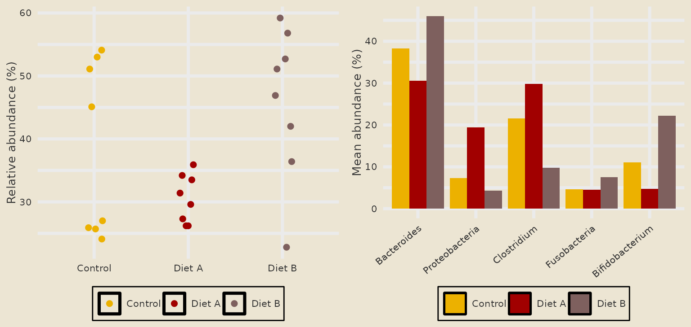
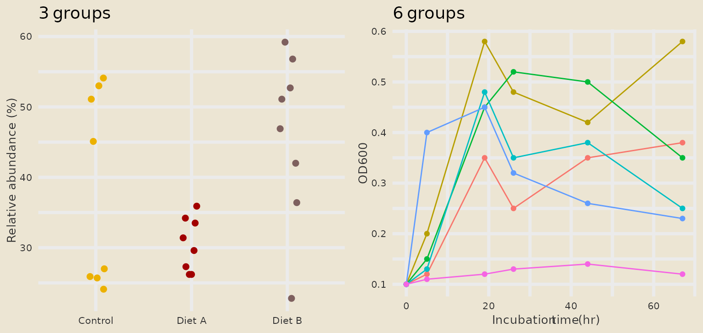
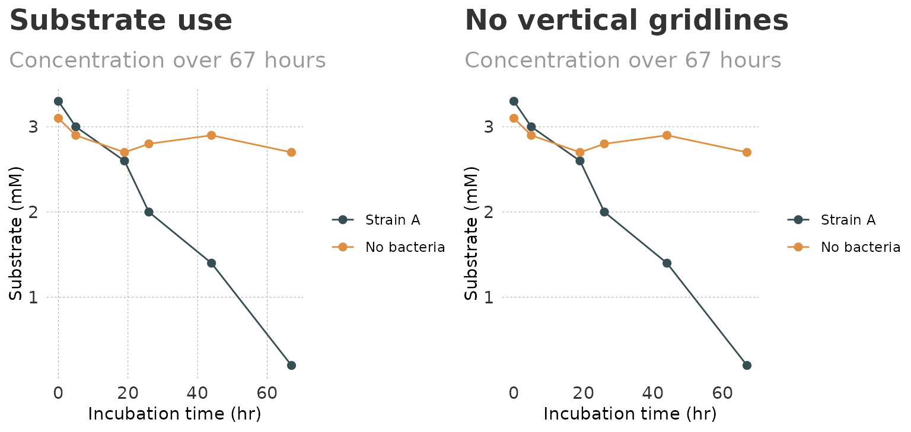
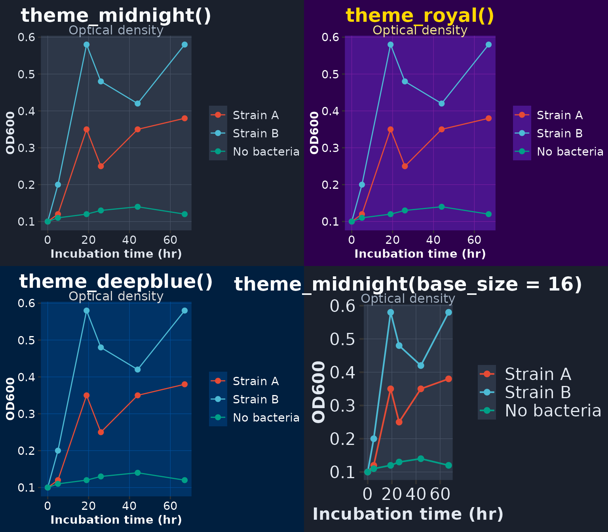
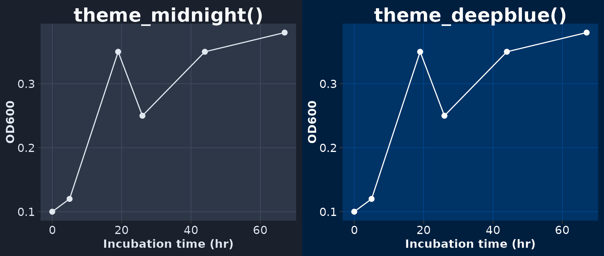

Global and Custom Themes
Source:vignettes/global-and-custom-themes.Rmd
global-and-custom-themes.Rmd
library(ggplot2)
library(themeset)
growth <- example_growth()
od <- subset(growth, measure == "OD600")
taxa <- example_taxa()Overview
This article covers two things:
-
Global themes.
set_global_theme()makes a set the default for every plot in the R session, so you choose the look once instead of on each plot. -
Custom themes.
theme_nyt(),theme_midnight(),theme_royal()andtheme_deepblue()are themes thatthemesetdefines itself.
The examples use the simulated data of example_growth()
and example_taxa().
1. Setting a Global Theme
set_global_theme() takes the name of a set and does two
things:
- It calls
ggplot2::theme_set()with the set’s theme. - If the set has color and fill scales, it stores the first three
colors of each palette as ggplot2’s default discrete colors and fills
(the options
ggplot2.discrete.colourandggplot2.discrete.fill).
It prints a message and returns the set invisibly. From then on plots need no theme and no scale of their own:
set_global_theme("avatar")
points <- ggplot(subset(taxa, taxon == "Bacteroides"),
aes(condition, abundance, color = condition)) +
geom_point(position = position_jitter(width = 0.1, height = 0, seed = 1), size = 2) +
labs(x = NULL, y = "Relative abundance (%)", color = NULL)
bars <- ggplot(taxa, aes(taxon, abundance, fill = condition)) +
stat_summary(fun = mean, geom = "col", position = position_dodge()) +
guides(x = guide_axis(angle = 40)) +
labs(x = NULL, y = "Mean abundance (%)", fill = NULL)
cowplot::plot_grid(points, bars, ncol = 2)
The colors are stored in the options, where you can look at them:
getOption("ggplot2.discrete.colour")
#> [1] "#ecb100" "#a10000" "#7E605E"
getOption("ggplot2.discrete.fill")
#> [1] "#ecb100" "#a10000" "#7E605E"The Global Palette Has Three Colors
Because only three colors are stored, a plot with up to three groups uses the set’s colors. A plot with more groups falls back to ggplot2’s own default colors for all of its groups. The three conditions below get the colors of the set, the six strains do not:
three <- ggplot(subset(taxa, taxon == "Bacteroides"),
aes(condition, abundance, color = condition)) +
geom_point(position = position_jitter(width = 0.1, height = 0, seed = 1),
size = 2, show.legend = FALSE) +
labs(title = "3 groups", x = NULL, y = "Relative abundance (%)")
six <- ggplot(od, aes(time, value, color = strain)) +
geom_line(show.legend = FALSE) +
geom_point(size = 1.5, show.legend = FALSE) +
labs(title = "6 groups", x = "Incubation time (hr)", y = "OD600")
cowplot::plot_grid(three, six, ncol = 2)
For plots with many groups add a scale of your own, for example
scale_color_avatar(), which has eight colors.
Switching Sets
set_global_theme() only touches the palette options when
the new set has scales. After a switch to a theme-only set the palette
of the previous set is still in place:
set_global_theme("minimal")
getOption("ggplot2.discrete.colour")
#> [1] "#ecb100" "#a10000" "#7E605E"If that is not what you want, call reset_global_theme()
between the two.
Resetting
reset_global_theme() goes back to ggplot2’s defaults:
theme_gray() and no stored palettes. It does not restore
whatever theme was active before you called
set_global_theme().
reset_global_theme()
getOption("ggplot2.discrete.colour")
#> NULLIn Scripts and Documents
Set the theme once, near the top of the script or in the setup chunk of an R Markdown document:
library(ggplot2)
library(themeset)
set_global_theme("fivethirtyeight")
# ... every plot below uses the set ...2. Custom Themes
theme_nyt()
A minimal theme with bold titles, a gray subtitle and dashed
gridlines. The arguments gridline_x and
gridline_y switch the major gridlines of each axis on (the
default) or off:
substrate <- subset(growth, measure == "Substrate (mM)" &
strain %in% c("Strain A", "No bacteria"))
nyt_base <- ggplot(substrate, aes(time, value, color = strain)) +
geom_line() +
geom_point(size = 2) +
scale_color_jama() +
labs(
title = "Substrate use",
subtitle = "Concentration over 67 hours",
x = "Incubation time (hr)", y = "Substrate (mM)", color = NULL
)
cowplot::plot_grid(
nyt_base + theme_nyt(),
nyt_base + labs(title = "No vertical gridlines") + theme_nyt(gridline_x = FALSE),
ncol = 2
)
Dark Themes
theme_midnight(), theme_royal() and
theme_deepblue() color the plot background, the panel, the
text and the gridlines. They take base_size and
base_family, which are passed on to
theme_gray(). Dark backgrounds call for a bright palette,
so these plots use scale_color_npg():
dark_base <- ggplot(subset(od, strain %in% c("Strain A", "Strain B", "No bacteria")),
aes(time, value, color = strain)) +
geom_line() +
geom_point(size = 2) +
scale_color_npg() +
labs(subtitle = "Optical density", x = "Incubation time (hr)", y = "OD600", color = NULL)
cowplot::plot_grid(
dark_base + ggtitle("theme_midnight()") + theme_midnight(),
dark_base + ggtitle("theme_royal()") + theme_royal(),
dark_base + ggtitle("theme_deepblue()") + theme_deepblue(),
dark_base + ggtitle("theme_midnight(base_size = 16)") + theme_midnight(base_size = 16),
ncol = 2
)
These four themes are ordinary ggplot2 themes, so everything that
works with theme_gray() works with them, including adding
theme() calls afterwards to adjust single elements.
The dark themes also set the default color of points, lines, bars and text to a light one. A layer without a color mapping therefore shows on the dark panel instead of drawing black on dark (this needs ggplot2 4.0 or later; older versions draw such layers black):
plain <- ggplot(subset(od, strain == "Strain A"), aes(time, value)) +
geom_line() +
geom_point(size = 2) +
labs(x = "Incubation time (hr)", y = "OD600")
cowplot::plot_grid(
plain + ggtitle("theme_midnight()") + theme_midnight(),
plain + ggtitle("theme_deepblue()") + theme_deepblue(),
ncol = 2
)
Summary
| To do | Use |
|---|---|
| Set the look for the whole session | set_global_theme("<set>") |
| Go back to ggplot2’s defaults | reset_global_theme() |
| Have more than three global colors | Add a scale_color_*() or scale_fill_*() to
the plot |
| Light theme with dashed gridlines |
theme_nyt(), with gridline_x and
gridline_y
|
| Dark theme |
theme_midnight(), theme_royal() or
theme_deepblue()
|